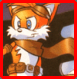

Arte de tirar foto com óculos 3D
:::.Texto por Gigacom
:::. Pesquisa Milles Prower
fonte: Videogame nº 4
Essa saiu com tom de piada, vejam:
Ainda hoje, não conheci ninguem que tenha aprendido a como tirar fotos de um jogo 3D do Master Mas por que é tão dificil? Simples, os jogos 3D operam sob um efeito que provoca aquela tremida na tela constantemente, mesmo quando o jogo é pausado ou dá pau. Juro! Se você enfiar o Poseidon Wars 3D num Master, e arrancá-lo de lá na maior força bruta, o tremilique continua entortando os olhos da mesma forma . Até onde sei, essa função é a mesma em TODOS os jogos 3D do Master, não mudando nadica de nada em nenhum deles.
Olha que legal, quem é garoto de programa sabe como é, ao se fazer um programa de computador (aha! tava pensando que era outra coisa né seu pervertido  ) é
mais fácil aproveitar o que chamamos de componentes prontos,
para executar uma desejada função no programa. As famosas
engines são uma coletânea desses componentes, e as
empresas que tem uma engine já pronta, podem criar diversos
jogos baseado nos recursos ali existentes. Essa é a razão
de você ver as mesmas fontes nas letrinhas, alguns efeitos
sonoros, e até o mesmo estilão gráfico
compartilhado em jogos como The Revenge of Shinobi e Streets of Rage
que usam a mesma engine, ou Aftert Burner II, Out Run e Space Harrier
que tambem usam outra engine igualzinha, e por aí vai.
) é
mais fácil aproveitar o que chamamos de componentes prontos,
para executar uma desejada função no programa. As famosas
engines são uma coletânea desses componentes, e as
empresas que tem uma engine já pronta, podem criar diversos
jogos baseado nos recursos ali existentes. Essa é a razão
de você ver as mesmas fontes nas letrinhas, alguns efeitos
sonoros, e até o mesmo estilão gráfico
compartilhado em jogos como The Revenge of Shinobi e Streets of Rage
que usam a mesma engine, ou Aftert Burner II, Out Run e Space Harrier
que tambem usam outra engine igualzinha, e por aí vai.
Logo, o efeitão 3D dos jogos do Master, vai ter o mesmo comportamento pois usam a mesmissima função. Até alguns pouquissimos jogos 3D não produzidos pela Sega utilizam esse componente, pois havia o costume da Sega interagir com as softhouses e ceder à elas o uso desses códigos na produção de jogos para o Master, não só para padronizar a coisa, mas tambem para agilizar o processo de criação e evitar a reinvenção da roda.